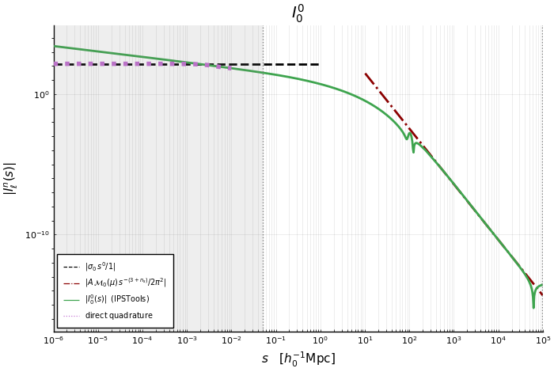
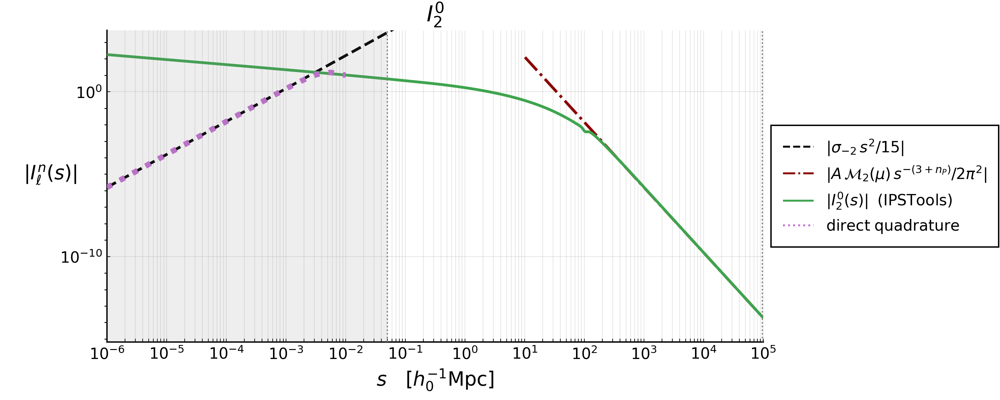
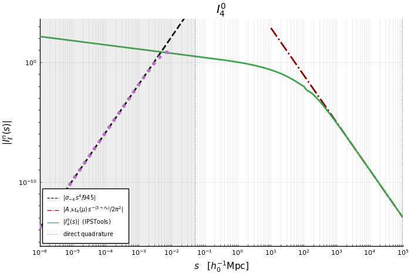
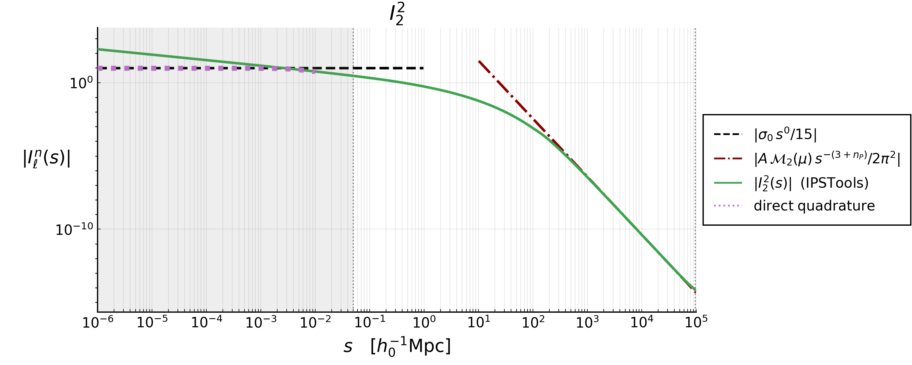
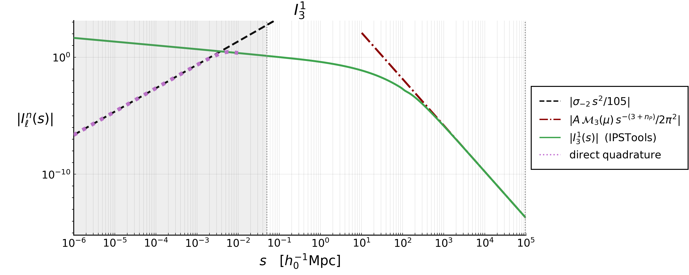
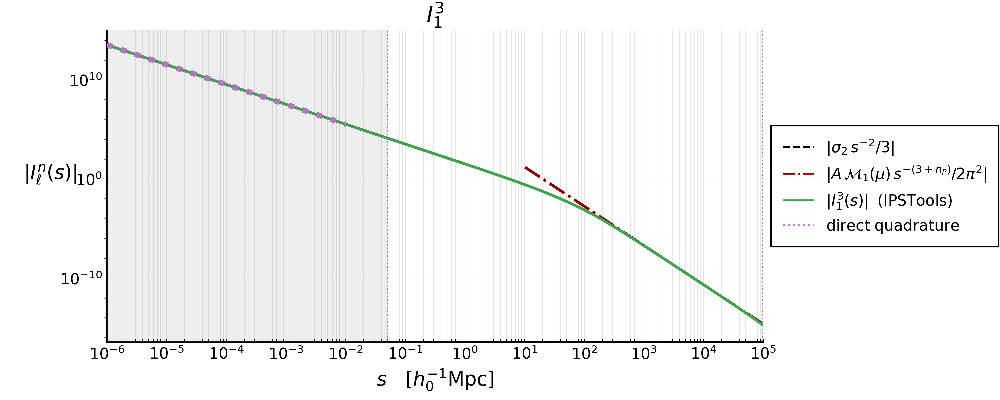
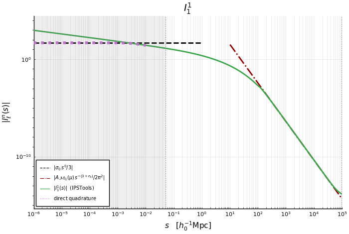
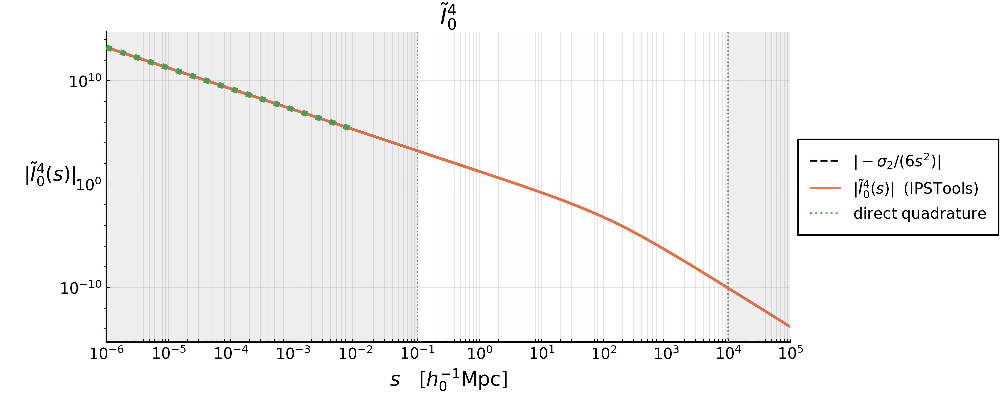

The $I_\ell^n$ integrals
Every Two-Point Correlation Function (TPCF) that GaPSE computes is, in the end, a sum of terms of the form $J(\chi, s, y) \, I_\ell^n(\Delta\chi)$. This page collects the definition of these $I_\ell^n$, proves their behaviour for small separations, and shows what they look like.
The plots are produced by the script theory/Iln_terms.jl (or, equivalently, by the notebook theory/Iln_terms.ipynb); see the end of this page.
Definitions
The integrals are
\[ I_\ell^n(s) := \int_0^{+\infty} \frac{\mathrm{d}q}{2\pi^2} \, q^2 \, P(q) \, \frac{j_\ell(qs)}{(qs)^n} \;, \quad \quad (1)\]
with $P(q)$ the matter Power Spectrum at $z=0$ stored inside the Cosmology, and $j_\ell$ the spherical Bessel function of order $\ell$. The eight combinations $(\ell, n)$ that appear in the code are
\[ (0,0) \, , \quad (2,0) \, , \quad (4,0) \, , \quad (0,2) \, , \quad (2,2) \, , \quad (3,1) \, , \quad (1,3) \, , \quad (1,1) \; ,\]
and they are stored in IPSTools as I00, I20, I40, I02, I22, I31, I13 and I11 respectively, i.e. the name is I followed by $\ell$ and then $n$. Alongside them there is the auxiliary integral
\[\begin{align*} \tilde{I}_0^4(s) &:= \int_0^{+\infty} \frac{\mathrm{d}q}{2\pi^2} \, q^2 \, P(q) \, \frac{j_0(qs) - 1 }{(qs)^4} \quad \quad (2) \\[10pt] &= \frac{1}{s^4} \int_0^{+\infty} \frac{\mathrm{d}q}{2\pi^2} \, \frac{P(q)}{q^2} \, \left[ j_0(qs) - 1 \right] \; . \end{align*}\]
stored in IPSTools as I04_tilde and computed by GaPSE.func_I04_tilde.
We also need the moments of the Power Spectrum
\[ \sigma_i := \int_{k_\mathrm{min}}^{k_\mathrm{max}} \frac{\mathrm{d}q}{2 \pi^2} \, q^{2-i} \, P(q) \; , \quad \quad (3)\]
of which IPSTools stores $\sigma_0$, $\sigma_1$, $\sigma_2$, $\sigma_3$ and $\sigma_4$. Note that $\sigma_i$ with $i<0$ also appear below; they are perfectly finite as long as $k_\mathrm{max}$ is finite, but they are not stored, so the script recomputes them when needed.
The small-$s$ behaviour
!!! note Limits of $I_\ell^n$ integrals $ I\ell^n(s) \; \underset{s \rightarrow 0}{\sim} \; \frac{\sigma{n-\ell}}{(2\ell+1)!!} \, s^{\,\ell - n} \quad \quad (4a) \qquad\qquad \tilde{I}0^4(s) \; \underset{s \rightarrow 0}{\sim} \; - \frac{\sigma2}{6 \, s^2} \quad \quad (4b) $
Proof.
Acronym used for the sources:
- DLMF = Digital Library of Mathematical Functions
- NIST = National Institute of Standards and Technology
The Taylor series of the spherical Bessel function $j_\ell(x)$ of order $\ell$ is the following everywhere-convergent expansion (source: U.S. NIST DLMF, Spherical Bessel Functions - Power Series, Section 10.53 ):
\[ j_\ell(x) = \sum_{k=0}^{+\infty} \frac{(-1)^k \, x^{\ell + 2k}}{2^k \, k! \, (2\ell + 2k + 1)!!} \; \quad \quad (5)\\[10pt] \quad n!! := \begin{cases} 2 \cdot 4 \cdot 6 \cdot ... \cdot n & n \mathrm{\; is \; even} \\ 1 \cdot 3 \cdot 5 \cdot ... \cdot n & n \mathrm{\; is \; odd} \\ 1 & n=0,-1 \end{cases} \]
We can set $x = qs$ and divide both terms by $(qs)^n$:
\[ x:=qs \; \Rightarrow \; \frac{(5)}{(qs)^n} : \quad \quad \frac{j_\ell(qs)}{(qs)^n} = \sum_{k=0}^{+\infty} \frac{(-1)^k \, (qs)^{\ell + 2k - n}} {2^k \, k! \, (2\ell + 2k + 1)!!} \; . \quad \quad (6)\]
We then insert this last Eq.(6) into the definition of $I_\ell^n$ integrals Eq.(1), we bring the sum outside the integral (which is legitimate because the series converges uniformly on the compact integration range $[k_\mathrm{min}, k_\mathrm{max}]$) and we insert the definition of $\sigma_i$ Eq.(3):
\[\begin{align*} (1): \quad \quad I_\ell^n(s) &:= \int_0^{+\infty} \frac{\mathrm{d}q}{2\pi^2} \, q^2 \, P(q) \, \frac{j_\ell(qs)}{(qs)^n} \\[10pt] \mathrm{inserting\; } (6) \; \rightarrow \;\; \quad &= \int_0^{+\infty} \frac{\mathrm{d}q}{2\pi^2} \, q^2 \, P(q) \, \sum_{k=0}^{+\infty} \frac{(-1)^k \, (qs)^{\ell + 2k - n}} {2^k \, k! \, (2\ell + 2k + 1)!!} \\[10pt] &= \sum_{k=0}^{+\infty} \frac{(-1)^k \; s^{\ell + 2k - n}} {2^k \, k! \, (2\ell + 2k + 1)!!} \int \frac{\mathrm{d}q}{2\pi^2} \, q^{\,2 - (n - \ell - 2k)} \, P(q) \; \\[10pt] \mathrm{inserting\; } (3) \; \rightarrow \;\; \quad &= \sum_{k=0}^{+\infty} \frac{(-1)^k \; \sigma_{n - \ell - 2k}} {2^k \, k! \, (2\ell + 2k + 1)!!} \; s^{\,\ell + 2k - n} \; . \quad \quad (7) \end{align*}\]
Every term carries two more powers of $s$ than the previous one, so for $s \rightarrow 0$ the $k=0$ term dominates, which is the claimed result:
\[\begin{align*} (7):\quad\quad I_\ell^n(s) &= \sum_{k=0}^{+\infty} \frac{(-1)^k \; \sigma_{n - \ell - 2k}} {2^k \, k! \, (2\ell + 2k + 1)!!} \; s^{\,\ell + 2k - n} \\[10pt] &= s^{\,\ell - n} \left[ \frac{\sigma_{n-\ell}}{(2\ell+1)!!} + \sum_{k=1}^{+\infty} \frac{(-1)^k \; \sigma_{n - \ell - 2k}} {2^k \, k! \, (2\ell + 2k + 1)!!} \; s^{2k}\right]\\[10pt] &= \frac{\sigma_{n-\ell}}{(2\ell+1)!!} s^{\,\ell - n} \left[1 + \alpha_1 s^2 + \alpha_2 s^4 + ...\right]\\[10pt] &\underset{s \rightarrow 0}{\sim} \frac{\sigma_{n-\ell}}{(2\ell+1)!!} s^{\,\ell - n} \; . \quad\quad (8) \end{align*}\]
For $\tilde{I}_0^4$ the same argument applies to $j_0(x) - 1$, whose series starts at $k=1$:
\[\begin{align*} (5) \mathrm{\;with\;}\ell=0 : \quad \quad j_0(x) &= \sum_{k=0}^{+\infty} \frac{(-1)^k \, x^{2k}}{2^k \, k! \, (2k + 1)!!}\; \\[10pt] &= 1+\sum_{k=1}^{+\infty} \frac{(-1)^k \, x^{2k}}{2^k \, k! \, (2k + 1)!!} \\[10pt] 2^k \, k! \, (2k+1)!! = (2k+1)! \; \rightarrow \quad \quad &= 1+\sum_{k=1}^{+\infty} \frac{(-1)^k \, x^{2k}}{(2k+1)!} \end{align*}\]
\[\Rightarrow \quad \quad j_0(x) -1 = \sum_{k=1}^{+\infty} \frac{(-1)^k \, x^{2k}}{(2k+1)!} \quad \quad (9)\]
Then
\[\begin{align*} (2): \quad \quad \tilde{I}_0^4(s) &= \frac{1}{s^4} \int_0^{+\infty} \frac{\mathrm{d}q}{2\pi^2} \, \frac{P(q)}{q^2} \, \left[ j_0(qs) - 1 \right] \; \\[10pt] \mathrm{inserting\; } (9) \; \rightarrow \;\; \quad &= \frac{1}{s^4} \int_0^{+\infty} \frac{\mathrm{d}q}{2\pi^2} \, \frac{P(q)}{q^2} \sum_{k=1}^{+\infty} \frac{(-1)^k \, (qs)^{2k}}{(2k+1)!}\\[10pt] &= \frac{1}{s^4} \sum_{k=1}^{+\infty} \frac{(-1)^k \, s^{2k}}{(2k+1)!} \int_0^{+\infty} \frac{\mathrm{d}q}{2\pi^2} \, q^{\,2k-2} \, P(q)\\[10pt] &= \sum_{k=1}^{+\infty} \frac{(-1)^k}{(2k+1)!}s^{2k-4} \int_0^{+\infty} \frac{\mathrm{d}q}{2\pi^2} \, q^{2-(4-2k)} \, P(q)\\[10pt] \mathrm{inserting\; } (3) \; \rightarrow \;\; \quad &=\sum_{k=1}^{+\infty} \frac{(-1)^k \, \sigma_{4-2k}}{(2k+1)!} \, s^{\,2k-4} \; , \quad\quad (10) \end{align*} \]
And analogously, every term carries two more powers of $s$ than the previous one, so for $s \rightarrow 0$ the $k=1$ term dominates, which is again the claimed result:
\[\begin{align*} (10):\quad\quad \tilde{I}_0^4(s) &= \sum_{k=1}^{+\infty} \frac{(-1)^k \, \sigma_{4-2k}}{(2k+1)!} \, s^{\,2k-4} \\[10pt] &= s^{-2} \left[ \sum_{k=1}^{+\infty} \frac{(-1)^k \; \sigma_{4 - 2k}} {(2k + 1)!} \; s^{2k-2}\right]\\[10pt] &= s^{-2} \left[ - \frac{\sigma_{2}}{3!} + \frac{\sigma_0}{5!}s^2 - \frac{\sigma_{-2}}{7!}s^4 +... \right]\\[10pt] &= - \frac{\sigma_{2}}{6} s^{-2} + \frac{\sigma_0}{120} - \frac{\sigma_{-2}}{5040} s^2 + ... \\[10pt] &\underset{s \rightarrow 0}{\sim} - \frac{\sigma_{2}}{6\,s^2} \; . \quad\quad (11) \end{align*}\]
The three regimes
The sign of $\ell - n$ decides everything:
\[I_\ell^n \xrightarrow[s \rightarrow 0]{} \begin{cases} \propto s^{\ell-n} \rightarrow 0 & \ell > n \\[10pt] \frac{\sigma_0}{(2\ell+1)!!} & \ell = n \\[10pt] \propto \frac{1}{s^{n-\ell}} \rightarrow +\infty & \ell < n \end{cases} \]
| $\ell$ | $n$ | $s \rightarrow 0$ | limit | |
|---|---|---|---|---|
| $\, I_0^0 \,$ | $\, 0 \,$ | $\, 0 \,$ | $\sigma_0$ | const |
| $\, I_2^0 \,$ | $\, 2 \,$ | $\, 0 \,$ | $\frac{\sigma_{-2}}{15} \, s^2$ | $0$ |
| $\, I_4^0 \,$ | $\, 4 \,$ | $\, 0 \,$ | $\frac{\sigma_{-4}}{945} \, s^4$ | $0$ |
| $\, I_0^2 \,$ | $\, 0 \,$ | $\, 2 \,$ | $\sigma_2 \, s^{-2}$ | $+\infty$ |
| $\, I_2^2 \,$ | $\, 2 \,$ | $\, 2 \,$ | $\frac{\sigma_0}{15}$ | const |
| $\, I_3^1 \,$ | $\, 3 \,$ | $\, 1 \,$ | $\frac{\sigma_{-2}}{105} \, s^2$ | $0$ |
| $\, I_1^3 \,$ | $\, 1 \,$ | $\, 3 \,$ | $\frac{\sigma_2}{3 \, s^{-2}}$ | $+\infty$ |
| $\, I_1^1 \,$ | $\, 1 \,$ | $\, 1 \,$ | $\frac{\sigma_0}{3}$ | const |
| $\, \tilde{I}_0^4 \,$ | - | - | $-\frac{\sigma_2}{6}\, s^{-2}$ | $+\infty$ |
The diverging ones are never a problem in practice: inside a TPCF they always come multiplied by a $J$ carrying the matching positive power of $\Delta\chi$, so that the product stays finite. How the cancellation works, term by term and for every TPCF, is the subject of "The $\Delta\chi \rightarrow 0$ limits" page.
The plots
All the curves show $|I_\ell^n(s)|$ rather than $I_\ell^n(s)$: these integrals oscillate and change sign at large $s$, where a logarithmic vertical axis would not be defined. At small $s$, the regime this page is about, they keep a constant sign, so the absolute value is immaterial there and the asymptote (dashed, black) can be read off directly.

The three regimes are visible at a glance: the curves that flatten out ($\ell = n$), the ones that fall off as a power law ($\ell > n$) and the ones that blow up ($\ell < n$).
One by one
 |  |
 | |
 |  |
 |  |
 |
Reproducing the figures
The figures are not built by the documentation: they are committed under docs/src/assets/Iln_terms/, and regenerated on demand by the script in the theory/ directory. From theory/, after the one-time setup described in its README.md:
$ julia --project=. Iln_terms.jlwhich writes the plots and a table of the numerical values in theory/Iln_terms/, and, since SAVE_TO_DOCS = true, also refreshes the copies used by this page. The same computation is available step by step in the notebook theory/Iln_terms.ipynb.
See also: GaPSE.IPSTools, GaPSE.IntegralIPS, GaPSE.func_I04_tilde.